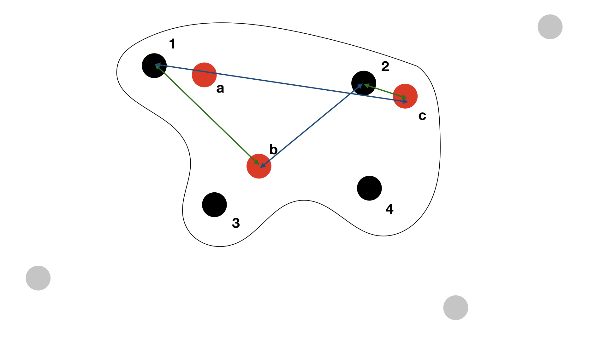
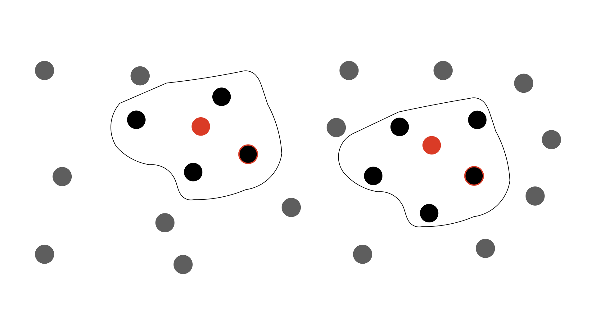

macauff Algorithms¶
macauff is a full probabilistic, Bayesian cross-match package. On this page you will find some of the details of the implementation, both mathematically and computationally.
Jump to:
Matching Overview¶
Following Wilson & Naylor (2018a, MNRAS, 473, 5570)’s “one-match” equations – the case where sources in catalogue “\(\gamma\)” are matched to multiple competing catalogue “\(\phi\)” objects, but there is at most one common detection between the two datasets – we have
where \(N_\mathrm{c}\), \(N_\gamma\), and \(N_\phi\) are the densities of matches between the two catalogues and of non-matches in the two catalogues respectively; \(G^{kl}_{\gamma\phi} \equiv G(\Delta x_{kl}, \Delta y_{kl})\) is the probability of two sources having some given on-sky separation under the hypothesis that they are counterparts; and \(c^{kl}_{\gamma\phi} \equiv c(m_k, m_l)\) and \(f_\gamma^i \equiv f_\gamma(m_i)\) are the joint probability of counterparts having their respective magnitudes in the two catalogues and of a non-match having its particular magnitude in its given catalogue. Here we iterate over \(s\) and \(t\) as the single common match between the two catalogues (\(s\) over catalogue \(\gamma\) and \(t\) over \(\phi\)) and \(i\) and \(j\) as the remaining non-matches in the two catalogues. Additionally, we have the potential case where there are no counterparts instead of one unknown pairing:
These forms can then be generalised to allow for more than one common match (Wilson & Naylor 2018a, equations 26-27):
where \(K\) is the normalisation constant – the evidence in the Bayesian framework – for the total number of permutations to consider between a particular set of sources in the two catalogues that may be potential counterparts to one another. \(k\) is the number of common matches (\(k=0\) then corresponds to hypothesis \(H_0\) above, of no common matches); \(\zeta\) is a particular \(k\)-length sub-set of the total sources being considered potential matches in catalogue \(\phi\), with \(\lambda\) the sub-set of potential matches from catalogue \(\phi\).
Thus after we create a small “universe” of objects on the sky that cannot be eliminated as potential counterparts to one another (splitting our large catalogue of objects into many smaller, independent sets of sources; see “island creation” below) between the two catalogues we iterate, first over the number of in-common matches (\(k\)), then for a given number of common matches (\(k=2\), for example) over which objects in the two catalogues are “matches” and which are “non-matches” – systematically, without any prior ruling on what may or may not be a “good” match to the other dataset – and then finally over which example pairing of the sources we have. For example, if \(\gamma = \{1, 2, 3, 4\}\) and \(\phi = \{a, b, c\}\) for \(k = 2\) we could have \(\zeta = \{1, 2\}\) and \(\lambda = \{b, c\}\) for which we need to consider \(1\) and \(b\) matching and \(2\) and \(c\) matching, as well as \(1-c\) and \(2-b\) matches. This example is shown below.
These equations are quite compact and hide a significant amount of computation to derive terms \(N\), \(G\), \(c\), and \(f\); these are expanded upon below.
The Astrometric Uncertainty Function¶
The key algorithmic extension of macauff is its generalisation of what Wilson & Naylor (2017, MNRAS, 469, 2517) called the AUF. This is the general belief in an astronomical object’s true position given its detected position. The most fundamental contribution to the AUF is the uncertainty in position due to noise in an astronomical image and the effect this has on any centroid metrics used to determine the position of a source in the image.
Wilson & Naylor (2018a) then showed that the probability of two objects (one per catalogue being matched) having some given on-sky separation under the hypothesis that they are counterparts to one another – two detections of the same astrophysical object – is the convolution of their respective AUFs – mathematically given by \(G = h_\gamma * h_\phi\). This is frequently quoted in literature for the case where noise-based centroid uncertainties are the only term considered, as these are Gaussian in nature and hence the convolution easy to compute (being a Gaussian with variance the sum of the individual objects’ variances).
However, Wilson & Naylor (2017) showed that for crowded datasets – in terms of number of sources per PSF below the object in consideration’s magnitude – there is an additional term that ought to be considered: that of the effect of hidden unresolved contaminant objects and their “tugging” on the centre-of-light of the (now composite) system during the centroid determination stage of a catalogue creation.
The specifics of how this is determined are expanded upon below, but the key is that this is simply an additional term within the AUF, and hence we have \(h_\mathrm{\gamma} = h_{\gamma, \mathrm{centroid}} * h_{\gamma, \mathrm{perturbations}}\). Each individual object has its certainty of its position reduced slightly by the unknown (but statistically quantifiable) effect of whether it has one (or multiple) unresolved faint objects within its point spread function, further moving its detected position away from its “true” location on the sky.
Photometric Likelihood¶
The other extension macauff includes over other cross-matching algorithms is the data-driven, symmetric consideration of the probability of objects being counterparts to one another or not based on their photometry. Here the idea put forward by Wilson & Naylor (2018a) is one of positive and negative reinforcement: if we were matching two datasets with observations taken in the same filter then we’d expect matches to be objects with the same brightness (scatter in measurements due to uncertainty in the detection notwithstanding); therefore, if we look within a few arcseconds of each object of a particular magnitude in one catalogue at the brightnesses of objects in the opposing catalogue we’d see a consistent set of objects of that same brightness, plus (unique to each source) a random scattering of other brightnesses (usually fainter, due to the larger number of faint objects). We can use these correlations and lack of correlations between magnitudes across the two catalogues to build a set of probabilities of match and non-match based on the photometry of the ensemble datasets. An example schematic highlighting this is shown below.
![A figure showing the way in which constructive and destructive correlations build a data-driven photometric match and non-match likelihood. For magnitude 15th sources in one catalogue (black dots) we look near to each object in turn and analyse the brightnesses of all coeval sources. Each source has a separate 15th magnitude object near to it, while each has a unique set of random other brightnesses. A schematic probability density function graph shows this building to a tight set of counterpart magnitudes and a broad distribution of non-counterpart magnitudes, distinguishing matches and non-matches on brightness alone.](_images/phot_like_pdf.png)
Here we can build the “field” star distribution – as Wilson & Naylor (2018a) refer to it, meaning the non-match distribution – \(f\) simply by considering the magnitude distributions of objects nowhere near to objects in a particular catalogue. In the below schematic, if we remove all of the black circles within the enclosed lines around the red objects, we can calculate a distribution of the brightnesses of all remaining objects – doing the same for the opposing case, to build the distribution of non-matched “red” sources.
This is possible since we should be able to make the assumption that the distribution of the magnitudes of objects on the sky is not correlated – i.e., the distribution of brightnesses of the non-matches within the enclosed regions in the above schematic is not, on large enough scales, any different from the distribution of magnitudes of sources outside of those regions. If this is not possible for some reason, use of photometric likelihoods with macauff should be avoided.
To calculate the match distributions \(c\) seems like it should be as easy as subtracting the distribution of non-match magnitudes from the distribution of magnitudes within the previous enclosed regions. If the non-match distributions are statistically the same, we’d expect that we should end up with something like (counterparts + field stars) - field stars = counterparts. However, as we saw above with the AUF, there is a catch: the point spread function of the telescope renders objects two-dimensional on astronomical images, and therefore faint objects are systematically hidden. Astrometrically they then have an effect on the measured positions, but this also means we would systematically over subtract our clean sample of “field” objects when attempting to separate out counterparts and non-matches from the nearby objects.
Therefore, in a given small magnitude range – say \(14.95 \leq m_\gamma \leq 15.05\) – we consider the “field” star (non-match) distribution \(f\) and the brightest star distribution \(b\), since \(b\) is a density-independent argument. Following Naylor et al. (2013, ApJS, 209, 30) we therefore find
where \(Z_c\) is the fraction of sources in the small magnitude range with counterparts inside a certain on-sky distance; \(Z\) is the fraction of sources in the magnitude slice with at least one source in its radius; \(A\) is the area within the specified radial distance; \(N_\phi\) is the density of non-matched sources in the catalogue; and \(C\) and \(F\) are the integrals of \(c\) and \(f\) from \(-\infty\) to \(m\).
After this is calculated, we are left with \(c(m_\phi | m_\gamma)\), which we can turn into a joint probability on magnitude – \(c(m, m)\) – by applying conditional probability, giving \(c(m_\gamma, m_\phi) = c_\gamma(m_\phi|m_\gamma) \cdot p_\gamma(m_\gamma)\) where \(p_\gamma(m_\gamma)\) is simply the probability density function describing the magnitude distribution of the entire catalogue \(\gamma\).
AUF Component Computation¶
Perturbation Due to Contaminant Object¶
To compute the effects of unresolved, blended contaminant objects we follow the methodology laid out by Wilson & Naylor (2018b, MNRAS, 481, 2148). In summary, for a particular object (described by its central magnitude and local object density) we simulate multiple realisations of the potential blended objects, compute the perturbation “tug” due to these objects, and combine all realisations.
To achieve this, we simulate galaxy counts through a Schechter function approximation (Wilson, 2022, RNAAS, 6, 60), and use the TRILEGAL simulations (Girardi et al., 2005, A&A, 436, 895) to realise a set of star counts for the particular line of sight in the Galaxy. Combining these, we then have a histogram of objects \(D\) – sources per square degree per unit magnitude – and the overal density of objects (sources per square degree) down to some specified magnitude, \(N_\mathrm{TRI}\). In all cases where needed, V-band extinction is calculated using the dust maps of Schlegel, Finkbeiner & Davis 1998 (ApJ, 500, 525; doi 10.7910/DVN/EWCNL5) and the Schlafly & Finkbeiner 2011 (ApJ 737, 103) extinction vectors.
Then, starting at the central object brightness, we step through from \(m\) to \(m + \Delta m_\mathrm{max}\) in steps of \(\mathrm{d}m\) – something like 0.1 magnitudes – and calculate how many objects we would expect to be within a “PSF” approximated by a circle of some radius \(R\) – generally considering at minimum a Rayleigh Criterion for deblending point sources. This is a numerical calculation, given by
with \(N_\mathrm{empirical}\) being the number of sources per square degree above a given magnitude in the dataset. For this particular simulation we then draw a realised number of objects \(k\) with magnitude \(m + \Delta m\) from a Poissonian distribution with \(\lambda = P_B\), randomise the fluxes within \(m + \Delta m\) to \(m + \Delta m + \mathrm{d}m\), and place the object(s) – if more than none are drawn – randomly within a circle of radius \(R\) (uniformly with angle \(0 \leq \theta < 2\pi\), uniformly in \(r^2\) space to account for the additional \(r\) term in the unit area of a circle, \(0 \leq r/R \leq 1\)). This is iterated across all magnitude bins from zero to \(\Delta m_\mathrm{max}\).
Once all sources for this given PSF are realised and placed within the circle, their effect on the central object is calculated; within macauff we have two options for calculating this effect, which we detail below. No matter how we calculate these offsets, though, once we have run this loop a given number of times we can calculate a PDF of the distribution of radial perturbations from all realisations. These realisations can equivalently thought of as a simulation of a patch of sky, distributing different brightness objects according to their specific densities, and then randomly placing additional “central” source circles within which objects are measured and their perturbation effects computed.
This distribution of offsets then forms \(h_\mathrm{perturbations}\) to be convolved with \(h_\mathrm{centroid}\). Computationally we achieve this by using a Hankel (Fourier-Bessell) transformation reducing a two-dimensional convolution (see Wilson & Naylor 2018a, equations 14-18) to a one-dimensional problem, and taking advantage of the fact that a convolution in real-space is equivalent to a multiplication in Fourier-space, so we calculate \(f * g\) as \(\mathcal{H}^{-1}(\mathcal{H}(f) \times \mathcal{H}(g))\), where \(\mathcal{H}\) is a Hankel transformation and \(\mathcal{H}^{-1}\) is an inverse Hankel transformation.
The Hankel transformation is given by
with the inverse Hankel transformation symmetrically defined
Note that this use of a Hankel transformation, instead of a more general two-dimensional Fourier transformation, implicitly requires circular symmetry, and hence a singular astrometric centroid uncertainty \(\sigma\). Therefore we require that the two catalogues being matched have reasonably circular covariance matrices that can approximate to a singular value for uncertainty, and if your dataset does not met this requirement you should consider whether the need to describe the centroid uncertainty completely is more important than the secondary effect of unresolved contaminant objects in that particular dataset.
If we have a sufficiently resolved array of perturbation AUF component offsets we can combine it with the noise-based centroid determination component of position uncertainty, analytically transforming a Gaussian to its Fourier-space representation as \(exp(-2 \pi^2 \rho^2 \sigma^2)\) and creating an array of values on the same \(\rho\) grid, and perform Hankel and inverse-Hankel transformations. First, convert the perturbation component to Fourier-space:
and then subsequently invert the Fourier-space representations back to real space:
where \(g = [\mathcal{H}(f)](\rho) \times exp(-2 \pi^2 \rho^2 \sigma^2)\). In practice since we then go a step further and convolve the two AUFs together, what we actually end up doing in e.g. the final “counterpart pairing” step is define \(g = [\mathcal{H}(f_\gamma)](\rho) \times [\mathcal{H}(f_\phi)](\rho) \times exp(-2 \pi^2 \rho^2 \sigma_\gamma^2) \times exp(-2 \pi^2 \rho^2 \sigma_\phi^2)\), convolving (multiplying the Fourier-space representations of) the two centroid, noise-based Gaussian distributions and the two distributions of perturbations due to unresolved contaminants, one per catalogue, simulated separately.
One of the key steps in this process is the determination of the “centre-of-light” perturbation due to the simulated blended contaminants within a particular PSF simulation realisation. macauff has two ways it currently handles these: the first, and the one detailed by Wilson & Naylor (2018b), is effectively the behaviour of the centre-of-light in aperture photometry, or in the limit of infinite signal-to-noise ratio (SNR), in which we simply take a flux-weighted average of all positions within the PSF, including the central object (with relative flux of one, and position at the origin). The second method, based on Plewa & Sari (2018, MNRAS, 476, 4372), is the opposite case: this handles the background sky dominated, PSF photometry regime, determining the least-squares minimisation of fitting two Gaussians (approximations of a PSF) with some offset with just a single PSF Gaussian. These two regimes are valid at very large and very small SNRs respectively; in the intermediate SNR regime the two versions of the AUF are calculated and a weighted average is taken using the SNR as a proxy for the weight to apply to each method.
Finally, we require \(N_\mathrm{empirical}\), the source density on the sky around each individual object, since we need to calculate the AUF on a grid of magnitudes and local normalising densities. Here we simply take a sum of all objects within some given radius and below the cut-off magnitude, and divide by the area \(\pi R^2\), accounting for the loss of area if sufficiently close to the edge of the cross-match region as defined.
If the parameter to calculate this extra AUF component is not enabled, then this entire calculation is bypassed and dummy variables are instead created. These represent the “null” result of zero perturbation, a delta function; this can be represented in Fourier-space as an array of 1s.
Island Group Creation Computation¶
The second stage of performing cross-matches with macauff is the creation of “islands” of potentially coeval counterparts, from which true matches are determined and counterpart assignment performed. Considering the example schematic within the Matching Overview section, one example of an “island” of sources is shown – but surrounding it there are extra islands. Instead of considering all match and non-match permutations simultaneously, as this is tremendously computationall expensive, we split sources up into those that overlap one another in the sky, cutting the complexity of the problem by separating out those objects that are definitely not matchs to one another into independent sub-sets of the main catalogue. At the same time, we will see that if we include photometric likelihoods we need to know whether particular sources are within a certain fraction of their cumulative probability of one another based on their respective AUFs.
The primary question we have in determining sub-catalogue islands is “are these two objects beyond some given critical astrometric separation?” – this question can either be in pure sky separation or some cumulative AUF-convolution percentage. Hence the initial step of the “group sources” stage is to determine potential counterpart pairings between our two catalogues based on both being within some absolute sky separation and within a given cumulative probability of separation if the objects were counterparts with their respective AUFs. The absolute sky separation is set for the entire catalogue, so should be sufficiently large to accommodate all sources and their uncertainties, but should not be too large such that all sources end up considered in one giant island together; for Gaia-WISE something like 10 arcseconds is a good starting separation. These “overlaps” are considered on a relatively “brute force” computational basis – small regions of sky are loaded into memory and all pairings are considered, first being eliminated on absolute sky separation and then through integrations of the AUF convolutions out to the specified radial separation. These can be achieved reasonably computationally efficiently by considering the integral of
where \(g = [\mathcal{H}(f_\gamma)](\rho) \times [\mathcal{H}(f_\phi)](\rho) \times exp(-2 \pi^2 \rho^2 \sigma_\gamma^2) \times exp(-2 \pi^2 \rho^2 \sigma_\phi^2)\) as defined previously – that is, \(g\) is the multiplication of all four Fourier-space components of the two AUFs – and \(\mathcal{H}^{-1}\) is the inverse-Hankel transformation. If we expand the inverse-Hankel transformation, rearrange and simplify we get
Hence the four-dimensional integral still reduces to a one-dimensional integral if we can consider circular symmetry. Computationally we perform
as an approximation to the integral.
With a set of inter-catalogue overlaps – sources that could not be ruled out as being too far apart to be non-matches with :math:1-mathrm{CDF}` chance – in hand, we briefly have to handle the duplicates from loading sub-sets of the catalogues in turn and remove the same overlap pairs across the two sides of the “centre”/”halo” divide. After that, if the cross-match run is using the photometry in any way we will require the radii out to which particular CDF values are found for each source. Here we can run the same approximation we did above, trying to solve \(\int\limits_0^{2\pi}\int\limits_0^{r}\! r{'}\,[\mathcal{H}^{-1}(g(\rho))](r{'})\,\mathrm{d}r{'}\,\mathrm{d}\theta = Y\), obtaining the particular value of \(r\) that results in a CDF fraction of \(Y\). Here we start with the middle value of \(r\) in the grid of real-space radii, and if the calculated CDF is greater than our chosen value \(Y\) then we calculate the value for \(r/2\), otherwise calculating it for \(3 r / 4\). Each time we halve the space we wish to search – performing a simple binary search – by either setting the lower or upper bound to our current \(r\) value. This search is performed 15 times, roughly the number of searches required to find the exact index in an array of length of order 10,000 elements. This search is performed for two lengths – for the “bright” object fraction and for the “field” object radius, with specified fractions chosen by the user. The search is performed for all overlapping opposing catalogue objects for a given object in a catalogue, taking the largest integration radius for each \(Y\) for cases where a source has multiple overlaps.
Next, islands are created from sets of disconnected overlaps. Here we loop through each overlap and assign it to a particular group or “island”: initially the two obvious cases are performed, in which objects with zero overlaps are assigned a solitary island number by themselves, and objects with a single overlap where that overlap object also only has the original object as its only overlap are assigned a group number with just the two objects in it. Finally, for more complex islands, a recursive search is performed where an object is given an island number, all of its overlaps are assigned the same group, and in turn those object’s overlaps are searched for new non-group-assigned overlaps, and recursively all overlaps are identified and added to the new group number together. These group numbers are then collated and reversed: instead of object \(1\) in catalogue \(\gamma\) and \(a\) in catalogue \(\phi\) having group number 1, a group list is made, where on one side the array index of object \(1\), and on the other side the index of object \(a\) are listed. This then means that the group index completely encloses all island sources. We check for group complexity – setting a hard upper limit on the number of match permutations to 50,000 – and reject any groups that are too large; this means that very dense catalogues, relative to the AUF length scale (primarily the centroid precision) may result in significant fractions of “missed” matches, but this would only happen if very large numbers of objects were all coeval on the sky with no ability to separate them at the >99% match chance.
Finally, we reject any islands which contain sources too close to the edges of the match region, such that they could be missing some objects beyond the edge of the match cutout. Hence if you wish to match some region, it is important to ensure that you “pad” for this eventually, as these matches will not be reliable and hence not returned as matches by macauff. This cutoff is the same one as used at the beginning of the “island group” stage to obtain overlaps between inter-catalogue sources, so if possible this should be set as low as can be trusted to minimise the fraction of objects lost at this stage.
Photometric Likelihood Computations¶
Computationally, the derivation of photometric likelihoods and corresponding densities is relatively straightforward, certainly as compared with the previous two stages.
As setup, we generate grids of magnitudes with some common spacing, and then for the grid of coordinates as input to macauff as “cf_region” data slices are loaded. If no use of photometry is required for the match – because neither the photometric likelihood nor photometric priors are desired – dummy variables are generated (\(c\) and \(f\) are set to 1, and unequal priors based on the number densities of the two catalogues are created). If the photometric likelihoods or priors are required, then we generate \(b\) and \(f\) as described in the Photometric Likelihood section.
\(f\) is computed by removing indices for all objects within the \(Y_f\) CDF integral radius. Since this is not 100%, there will be a small amount of “contamination” by counterparts inside this distribution, but the nature of taking the largest of all available radii – even if that is from the non-counterpart – will reduce this effect, and be vastly outweighed by the positive correlation of \(c\) for those same sources. Here \(f\) is calculated for all magnitudes – i.e., we remove the sources within some cutoff CDF radius for all objects in a catalogue, no matter their magnitude, leaving only magnitudes of sources not matched to any object in that catalogue. The resulting remaining brightnesses are then turned into a histogram which is converted to a PDF by \(\mathrm{PDF}_i = \mathrm{hist}_i / \Delta\mathrm{bin}_i / \sum_i \mathrm{hist}_i\). At the same time, the density of those remaining sources is found by their total number divided by the area of the catalogue remaining after all “error circles” have been punched out of the sky, giving \(N_\gamma\) used in Matching Overview.
\(b\) is also relatively straightforward to compute: within each “error circle” defined by the radius integrating to \(Y_b\), select the brightest opposing catalogue object, and create a PDF from the histogram of those sources. Then, following equation 33 of Wilson & Naylor (2018a) – shown in the Photometric Likelihood section – for each magnitude slice in the chosen catalogue we simply work our way from the brightest magnitudes (where \(C\) and \(F\) are zero) down to faintest in the other catalogue, updating \(c\) and \(C\) with each step. Here we do note that, in deviation from the notation used by Wilson & Naylor (2018a), within the derivation of \(c\) we use \(f(m_\phi|m_\gamma)\), which is simply those sources that do not match objects within this particular magnitude range. This actually then computes us \(Z_c \times c(m_\phi|m_\gamma)\), which we use to calculate \(Z_c\) – assuming that \(c(m_\phi|m_\gamma)\) is normalised, as it ought to be – which we combine with the expected fraction of objects with counterparts within \(Y_b\) CDF radius and the overall density of the chosen catalogue to derive the number density of counterparts \(N_c\). Finally, we convert \(c(m|m)\) to \(c(m, m)\) using the PDF of input magnitudes, and normalise the entire \(c\) array to integrate to unity.
Counterpart Assignment Computation¶
With \(G\), \(N\);, \(c\), and \(f\) in hand, the final step in the matching process can be computed: the determination of the counterparts between objects in the two catalogues.
Loading appropriately sized sub-chunks of the catalogue, islands are considered one at a time; this is possible as they are unique and isolated from one another, and hence do not affect the determination of matches in any other island.
If either side of the island is of length zero – i.e., one object with no potential matches in the opposing catalogue – then we trivially set various parameters, such as the object being a non-match with probability of one. Otherwise the \(k\)-combinations and permutations as described in Matching Overview are iterated over. We pre-calculate and pre-allocate various parameters such as \(N_c\), \(G\), and \(f\) to small arrays, as well as calculating \(\eta\) and \(\xi\), the logarithmic likelihood ratios of match purely on astrometric or photometric grounds independently. These values are for the most part simply extracted from previously calculated arrays, but \(G\) is computed on a per-source basis, using the general inverse-Hankel transformation given above.
During the calculation of \(G\) we also compute the three other permutations of “is this object subject to perturbation due to hidden contaminants” – which we use to determine the probability of each object being subject to perturbation on a statistical level given the separation of the two objects. This is computed as
where \(\omega\) is the hypothesis that the catalogue “a” object is contaminated while \(\widetilde{\psi}\) the hypothesis that catalogue “b“‘s source is not contaminated (i.e., has a delta function perturbation component of its AUF), and \(r\) is the separation between the two. Hence we calculate \(p\left(r | \omega, \psi\right)\), \(p\left(r | \widetilde{\omega}, \psi\right)\), \(p\left(r | \omega, \widetilde{\psi}\right)\), and \(p\left(r | \widetilde{\omega}, \widetilde{\psi}\right)\) while calculating \(G\), which in this notation is \(p\left(r | \omega, \psi\right)\).
The total number of combinations and permutations of match and non-match are then explored. Looping from zero matches to the maximum, the length of the smallest of the two sides of the island, the combinations of catalogue “a” and permutations of catalogue “b” are explored – this difference avoids the case where we repeat matches in a different order, which would occur if we used the permutation of both datasets. For a given number of matches, each combination (permutation) set is iterated over; for example, if we had an island with \(\{1, 2, 3\}\) for a two-counterpart (\(k=2\)) run we would test \(\{1, 2\}\), \(\{2, 3\}\), and \(\{1, 3\}\). The opposing side having \(\{a, b\}\) island members would test for permutations \(\{a, b\}\) and \(\{b, a\}\), for a total of six possible match pairings.
For each match pairing, we then simply calculate the product of the various \(G\), \(c\), \(N\), and \(f\) values as appropriate, update the total evidence, and keep track of the largest probability of all counterpart/non-counterpart combinations, returning these as matches and non-matches as appropriate. Additionally we record some ancillary values, such as average simulated contamination, likelihood ratios, fraction of objects with contaminants within them, etc. and return these array values as well.
Finally, matches and non-matches are filtered for obviously poor-quality data – negative probabilities, index values that are outside of bounds somehow, etc. – and arrays are output.